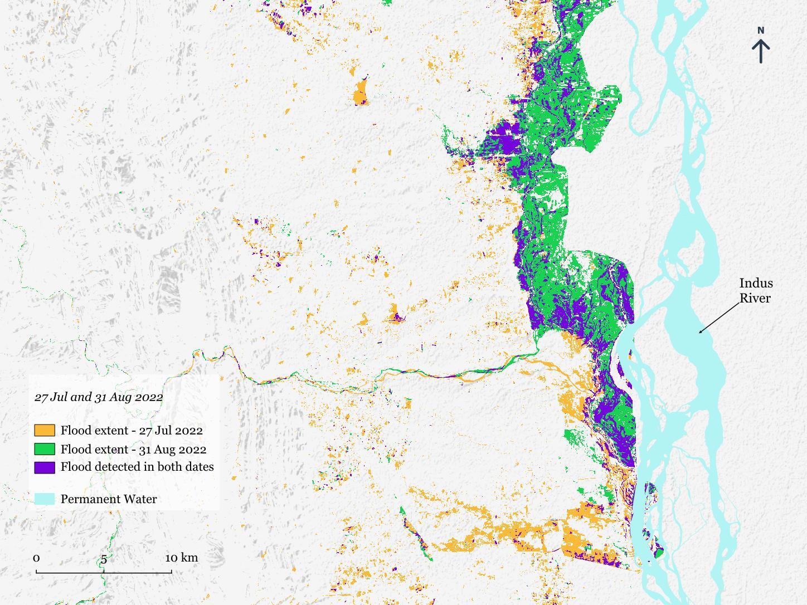
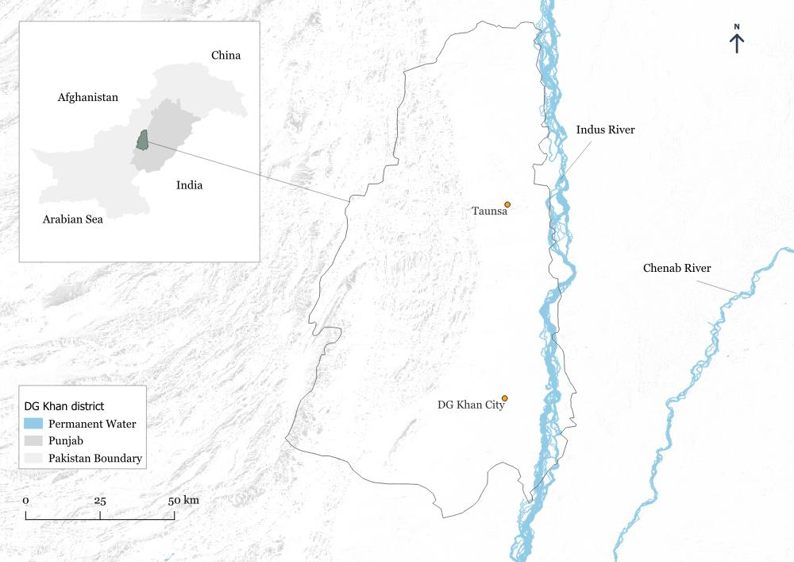
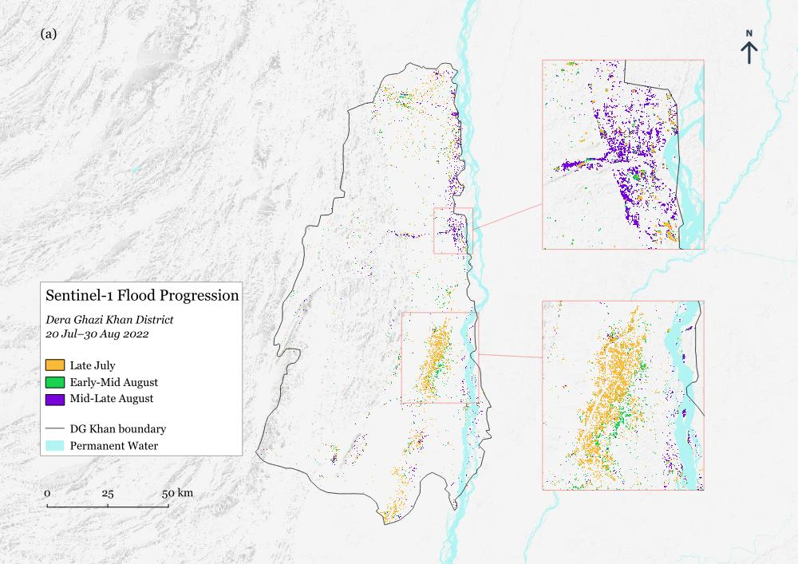
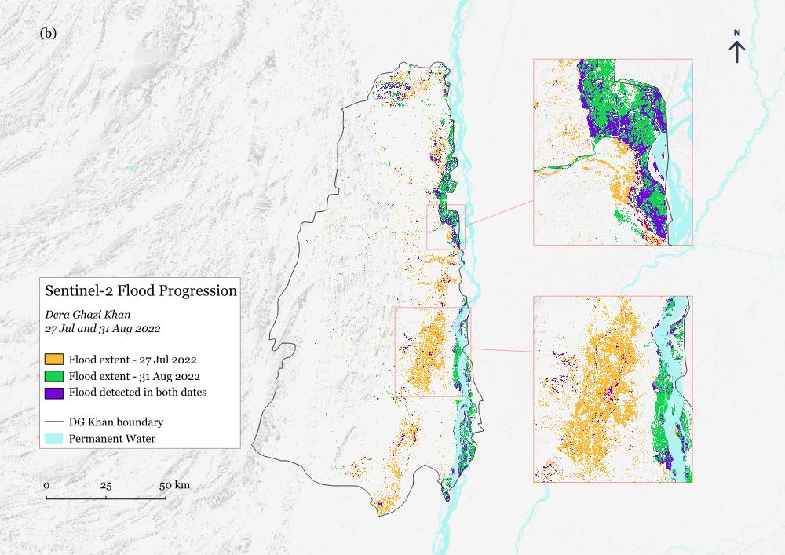
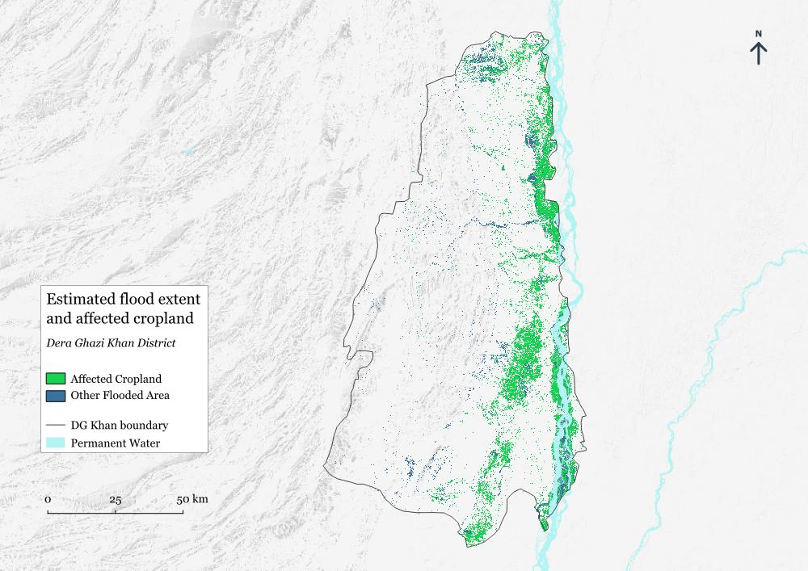

Sentinel-1 SAR
Orbit-specific VH observations with late-May / early-June pre-event baselines.

Combining Sentinel-1 SAR and Sentinel-2 optical observations to reconstruct a rapidly evolving 2022 flood event in Dera Ghazi Khan and estimate agricultural land exposed to mapped inundation.
During the 2022 Pakistan floods, I was asked at the University of Agriculture Faisalabad to produce a rapid estimate of flood-affected areas in Dera Ghazi Khan under a short operational timeframe. The event combined hill-torrent flooding from the Sulaiman Range with later riverine flooding along the Indus, while persistent monsoon cloud cover and satellite acquisition timing made peak inundation difficult to observe directly.
I later revisited the original workflow to make it more defensible: Sentinel-1 relative orbits were handled separately, pre-event baselines were refined, and radar and optical detections were treated as complementary observations rather than being forced to agree.
How can multi-sensor Earth observation be used to characterize a short-lived flood event when no single satellite acquisition captures the full inundation pattern?

The workflow retained the different strengths of radar and optical observations, then combined the mapped flood detections for land-cover exposure analysis.
Orbit-specific VH observations with late-May / early-June pre-event baselines.
Before/after backscatter ratios with permanent-water, terrain and connectivity filtering.
Cloud-masked optical observations with MNDWI-based surface-water detection.
Multi-date observations retained to show when and where inundation was observed.
Combined flood detections intersected with ESA WorldCover land-cover classes.
Sentinel-1 and Sentinel-2 captured different components of a rapidly evolving event. The disagreement between them was treated as information about acquisition timing, cloud availability, vegetation and surface response rather than simply as error.



The cumulative S1/S2 footprint represented approximately 1,402.6 km² of satellite-observed inundation, of which about 988.3 km² overlapped cropland. This is best interpreted as an exposure estimate rather than a direct measure of physical or economic damage.
Short-duration hill torrents may have passed between acquisitions, cloud cover restricted the optical record, and no independent field-based flood boundary was available for formal validation. The final map therefore represents observed inundation over the available satellite record rather than a reconstruction of the absolute maximum flood extent.